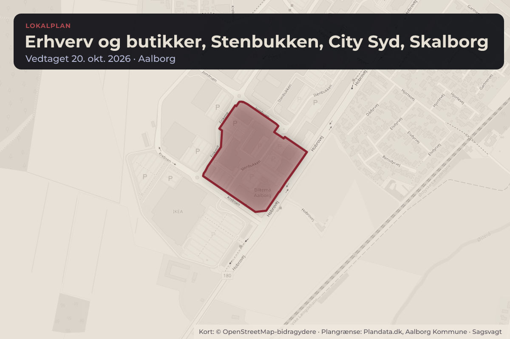
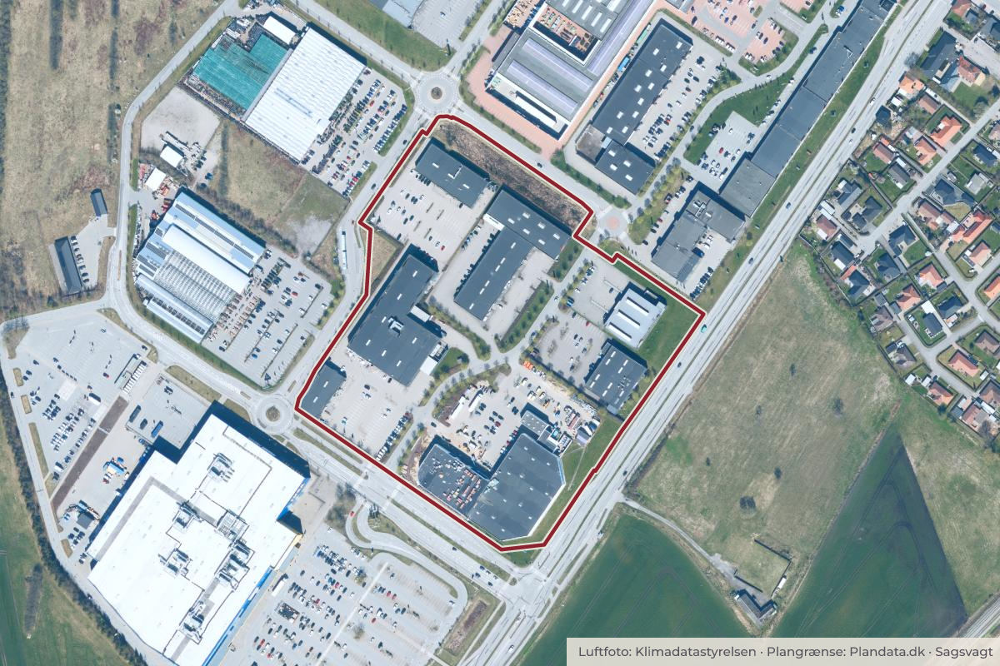

Besluttet 25. august, Teknik- og Miljøudvalget, Aalborg
Godkendelse af Lokalplan 3-6-120 Erhverv og butikker, Stenbukken 22, City Syd, Skalborg (1. forelæggelse)
Byggeri og lokalplanerErhverv og job

Kort: © OpenStreetMap-bidragydere. Plangrænse: Plandata.dk, Aalborg Kommune.

Kort fortalt
- Forslaget
- Forslag til Lokalplan 3-6-120.
- Der ikke skal udarbejdes en miljørapport
- Forslaget sendes i offentlig høring i minimum 4 uger.
- Hvem
- Teknik- og Miljøudvalget, Aalborg Kommune
- Hvornår
- Tirsdag 25. august 2026
- Status
- Besluttet. Godkendt. Jane Østergaard, Lasse Olsen og Susanne Juhl Krebs kan ikke godkende. Læs sagsbeskrivelsen til punkt 8 (PDF).
Er noget forkert her? Skriv til os
Læs hele sagen Kommunens egen tekst
Indstilling
Teknik og Miljø indstiller, at Teknik- og Miljøudvalget godkender
• forslag til Lokalplan 3-6-120.
• at der ikke skal udarbejdes en miljørapport, og
• at forslaget sendes i offentlig høring i minimum 4 uger.
Beslutning
Godkendt.
Jane Østergaard, Lasse Olsen og Susanne Juhl Krebs kan ikke godkende.
Læs sagsbeskrivelsen til punkt 8 (PDF)
Bilag
Kilde: Aalborg Kommune, Teknik- og Miljøudvalget, referat fra mødet tirsdag 25. august 2026, punkt 8. Læs den originale sag hos kommunen.